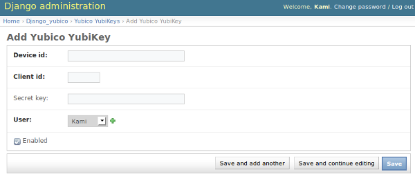
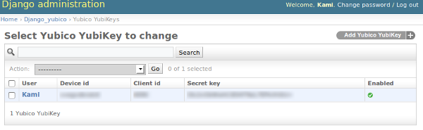

This module requires yubico-python module to work.
If you don’t already have it, you can install it from the git repository using this command:
pip install -e git://github.com/Kami/python-yubico-client.git#egg=python-yubico-client
After the requirements are satisfied you can use the following command to install this module from the git repository:
pip install -e http://github.com/Kami/django-yubico-authentication-backend#egg=django-yubico
Once the django_yubico is in your Python path, you need to modify the INSTALLED_APPS setting to include the django_yubico module:
INSTALLED_APPS = (
# ...,
# Third-party
'django_yubico',
# ...,
)
Run syncdb (this will create the database table which holds data about the YubiKeys):
python manage.py syncdb
Login to the Django admin panel, visit the Django_yubico application setting and add a new YubiKey for your user account:
When you click save, key should be successfully added and you are almost done.
To activate this backend you need at least put django_yubico.backends.YubicoBackend line to the AUTHENTICATION_BACKENDS tuple:
- AUTHENTICATION_BACKENDS = (
- ‘django_yubico.backends.YubicoBackend’,
)
For more information about the available backends and how they work, please visit the available authentication backends page.
Put the following line in your urls.py file:
(r'^yubico/', include('django_yubico.urls')),
Visit http://yourpage.com/yubico/login/ and if everything went ok you should be able to login using your website username, OTP generated by YubiKey and a password.
By default you need to enter both - first your username and OTP and in the second step, your account password. For more information how to change this behavior, visit the Settings page.